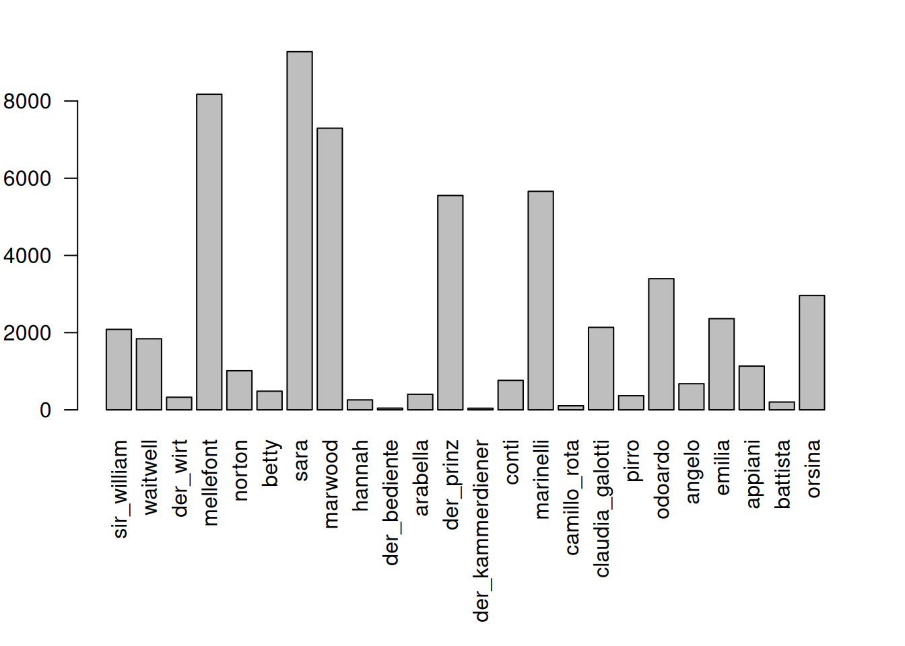

6 Who’s talking how much?
We’re assuming here that we have loaded some texts using loadDrama(), and that this text is stored as a QDDrama-object in the variable text. For demo purposes, we will use the two plays that are included in the R-package, Lessing’s Emilia Galotti and Miss Sara Sampson. Both have been preprocessed by the DramaNLP pipeline.
First, we calculate summary statistics over all characters.
# Load Emilia Galotti
data(rksp.0)
# Load Miß Sara Sampson
data(rjmw.0)
text <- combine(rksp.0, rjmw.0)
characterStatistics(text)## corpus drama character tokens types utterances utteranceLengthMean
## 1 test rjmw.0 sir_william 2085 707 23 90.65217
## 2 test rjmw.0 waitwell 1842 570 42 43.85714
## 3 test rjmw.0 der_wirt 327 179 7 46.71429
## 4 test rjmw.0 mellefont 8175 1744 201 40.67164
## 5 test rjmw.0 norton 1014 411 46 22.04348
## 6 test rjmw.0 betty 484 224 20 24.20000
## 7 test rjmw.0 sara 9278 1919 166 55.89157
## 8 test rjmw.0 marwood 7295 1763 155 47.06452
## 9 test rjmw.0 hannah 258 155 16 16.12500
## 10 test rjmw.0 der_bediente 44 34 2 22.00000
## 11 test rjmw.0 arabella 404 164 13 31.07692
## 12 test rksp.0 der_prinz 5553 1302 157 35.36943
## 13 test rksp.0 der_kammerdiener 42 34 6 7.00000
## 14 test rksp.0 conti 764 325 24 31.83333
## 15 test rksp.0 marinelli 5660 1343 221 25.61086
## 16 test rksp.0 camillo_rota 106 62 6 17.66667
## 17 test rksp.0 claudia_galotti 2137 668 73 29.27397
## 18 test rksp.0 pirro 366 207 25 14.64000
## 19 test rksp.0 odoardo 3398 927 108 31.46296
## 20 test rksp.0 angelo 678 315 28 24.21429
## 21 test rksp.0 emilia 2363 657 64 36.92188
## 22 test rksp.0 appiani 1133 433 48 23.60417
## 23 test rksp.0 battista 203 117 11 18.45455
## 24 test rksp.0 orsina 2962 791 64 46.28125
## utteranceLengthSd firstBegin lastEnd
## 1 108.893446 598 170851
## 2 59.335989 671 158696
## 3 45.095138 3573 5697
## 4 51.014622 5850 170201
## 5 23.440664 6330 170469
## 6 36.811897 9016 157000
## 7 79.167641 11768 167470
## 8 62.378159 28321 141018
## 9 15.654073 28393 58536
## 10 12.727922 31533 31791
## 11 31.739727 43991 52572
## 12 43.172327 426 136067
## 13 5.215362 1149 24954
## 14 40.141778 2654 12212
## 15 30.384695 13147 134486
## 16 19.179851 25577 26914
## 17 29.318301 27006 112526
## 18 10.719453 27113 50425
## 19 41.899842 27385 135555
## 20 21.382508 28777 64877
## 21 48.166808 36769 134940
## 22 25.821597 44452 56735
## 23 33.380724 67465 86481
## 24 52.298129 88094 112182This already gives us a lot of information about the characters. In particular, the function characterStatistics() returns a table (of the types QDCharacterStatistics, QDHasCharacter and data.frame) with information about:
- the number of tokens a character speaks (
tokens), - the number of different tokens a character speaks (
types), - the number of utterances (
utterances), - the average length of the utterances (
utteranceLengthMean), - their standard deviation (
utteranceLengthSd), - the character position of the start of the first utterance (
firstBegin), and - the character position of the end of the last utterance (
lastEnd).
The function characterStatistics() provides a number of options to control its exact behaviour. Entering ?characterStatistics in the R console opens the documentation for the function with a description of all the options. We’ll describe some frequently used options here as well:
Punctuation: By default, all punctuation marks are counted as tokens. This behaviour can be changed by setting
filterPunctuation=TRUE.Normalization: The values in the table above are all absolute values. When comparing to other texts, one is often interested in normalized values. If the option
normalizeis set toTRUE, all values will be normalised (if applicable).Segmentation: By default, the function extracts values for the entire play. With the option
segment, it is possible to extract statistics by act or scene, as shown in the example below. Except for the additional columnAct, the columns in the table are the same as before.
characterStatistics(rksp.0,
segment="Act")## corpus drama Act character tokens types utterances
## 1 test rksp.0 I der_prinz 2947 840 71
## 2 test rksp.0 I der_kammerdiener 42 34 6
## 3 test rksp.0 I conti 764 325 24
## 4 test rksp.0 I marinelli 1062 420 31
## 5 test rksp.0 I camillo_rota 106 62 6
## 6 test rksp.0 II claudia_galotti 1264 482 50
## 7 test rksp.0 II pirro 366 207 25
## 8 test rksp.0 II odoardo 622 298 17
## 9 test rksp.0 II angelo 416 228 19
## 10 test rksp.0 II emilia 1189 426 28
## 11 test rksp.0 II appiani 1133 433 48
## 12 test rksp.0 II marinelli 527 255 28
## 13 test rksp.0 III marinelli 1857 613 56
## 14 test rksp.0 III der_prinz 965 404 29
## 15 test rksp.0 III angelo 262 153 9
## 16 test rksp.0 III battista 195 111 9
## 17 test rksp.0 III emilia 417 178 16
## 18 test rksp.0 III claudia_galotti 641 250 16
## 19 test rksp.0 IV der_prinz 809 321 30
## 20 test rksp.0 IV marinelli 1377 501 72
## 21 test rksp.0 IV battista 8 7 2
## 22 test rksp.0 IV orsina 2962 791 64
## 23 test rksp.0 IV odoardo 765 303 30
## 24 test rksp.0 IV claudia_galotti 232 125 7
## 25 test rksp.0 V marinelli 837 366 34
## 26 test rksp.0 V der_prinz 832 330 27
## 27 test rksp.0 V odoardo 2011 645 61
## 28 test rksp.0 V emilia 757 273 20
## utteranceLengthMean utteranceLengthSd firstBegin lastEnd
## 1 41.50704 43.793305 426 26559
## 2 7.00000 5.215362 1149 24954
## 3 31.83333 40.141778 2654 12212
## 4 34.25806 34.466378 13147 23619
## 5 17.66667 19.179851 25577 26914
## 6 25.28000 28.804790 27006 56666
## 7 14.64000 10.719453 27113 50425
## 8 36.58824 42.804875 27385 36244
## 9 21.89474 21.385080 28777 32436
## 10 42.46429 63.801476 36769 48503
## 11 23.60417 25.821597 44452 56735
## 12 18.82143 17.346263 50431 55936
## 13 33.16071 35.842472 56826 79337
## 14 33.27586 49.950616 56914 72918
## 15 29.11111 21.779833 63132 64877
## 16 21.66667 36.441734 67465 75603
## 17 26.06250 27.167306 67517 79537
## 18 40.06250 29.535219 74777 79747
## 19 26.96667 38.991143 79838 95409
## 20 19.12500 21.503316 79972 103998
## 21 4.00000 2.828427 86363 86481
## 22 46.28125 52.298129 88094 112182
## 23 25.50000 20.610928 101533 112733
## 24 33.14286 29.952343 110037 112526
## 25 24.61765 37.334698 112824 134486
## 26 30.81481 37.764490 113752 136067
## 27 32.96721 49.085289 114998 135555
## 28 37.85000 34.351549 128910 134940Of course, the values in the above table can be directly plotted:
charStats <- characterStatistics(text, normalize=FALSE)
par(mar=c(9,3,2,2)) # increase plot margins, so that the labels can be plotted
barplot(charStats$tokens, # these are the values to be plotted
names.arg = charStats$character, # the labels on the x-axis
las=2 # rotate the labels on both axes
) 
6.1 Character names instead of identifiers
By default, all our functions identify characters using technical ids, which may or may not be human-readable. Even if they are, it’s usually a good idea to replace them with nice to read labels before publication. We therefore provide the function characterNames(), which can be applied to any table that contains a column with character ids (i.e., any object of type QDHasCharacter).
charStats <- characterStatistics(text, normalize=FALSE)
charStats <- characterNames(charStats, text) # Replace ids with names
par(mar=c(9,3,2,2)) # increase plot margins, so that the labels can be plotted
barplot(charStats$tokens, # these are the values to be plotted
names.arg = charStats$character, # the labels on the x-axis
las=2 # rotate the labels on both axes
)As can be seen above characterNames() requires two arguments: The table in which we want to replace ids by characters, and the original drama object (that we got from calling the function loadDrama()).
6.2 Stacked bar plot
The plot shown above is quite wide, and some aspects (like the ranking in terms of spoken tokens), is hard to see. We often use another way of visualizing this, which can be used if you supply the QDCharacterStatistics directly into the barplot() function. In combination with the magrittr pipes (see 3.2), we can call it like this (enter ?barplot.QDCharacterStatistics for details on the special barplot function):
characterStatistics(text, normalize=FALSE) %>%
characterNames(text) %>%
barplot(names.arg=dramaNames(text, formatString = "%T"))
By default, the barplot.QDCharacterStatistics() function visualises the number of tokens spoken by the characters (and ranks the characters accordingly). This can be changed by supplying the option column, and specifying another value.
characterStatistics(text, normalize=FALSE) %>%
characterNames(text) %>%
barplot(names.arg=dramaNames(text, formatString = "%T"),
column = "utteranceLengthMean") # show mean utterance length
This picture looks quite different! Other interesting columns to experiment with are types and utteranceLengthSd.
Another function that we used above is called dramaNames(). It can be used to extract
6.3 Collection analysis
As we have already seen above, the characterStatistics() function works well with multiple texts. This means, we can also use it to analyze all Sturm und Drang plays at once:
# this list can also be loaded using loadSet()
sturm_und_drang.ids <- c("qd:11f81.0", "qd:11g1d.0", "qd:11g9w.0",
"qd:11hdv.0", "qd:nds0.0", "qd:r12k.0",
"qd:r12v.0", "qd:r134.0", "qd:r13g.0",
"qd:rfxf.0", "qd:rhtz.0", "qd:rhzq.0",
"qd:rj22.0", "qd:tx4z.0", "qd:tz39.0",
"qd:tzgk.0", "qd:v0fv.0", "qd:wznj.0",
"qd:tx4z.0", "qd:rfxf.0")
sturm_und_drang.plays <- loadDrama(sturm_und_drang.ids)
par(mar=c(30,4,1,1))
characterStatistics(sturm_und_drang.plays, normalize=TRUE) %>%
characterNames(sturm_und_drang.plays) %>%
barplot(las=2, names.arg = dramaNames(sturm_und_drang.plays,
formatString = "%A: %T"))
While readability can certainly be improved upon, we can directly see that the relative active presence of the characters is distributed very differently in different plays. The most “talkative” character in Klinger’s Zwillinge, for instance, speaks almost one half of the words in the play, while Wenzelslaus in Lenz’ Hofmeister speaks much less, even in relative terms.